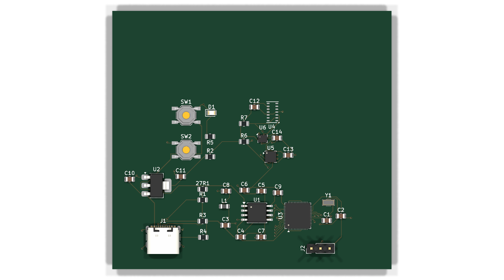

Hardware
The wrist unit, routed down to the last trace.
One processor, three sensors, 35 parts, 477 tracks, one USB-C socket. Every part placed and every track laid by hand in KiCad. The files are in the repository.
The design in three dimensions
Drag to turn it over

Exported from the layout by KiCad itself, command in hardware/README.md. Drag to turn, scroll to zoom.
Two things this picture does not show
The light sensor is missing from it. Nobody has drawn a 3D shape for that part, so the exporter leaves its spot empty. It is in the circuit, in the layout and fully wired up. The hole is left visible rather than filled in with something invented.
The copper is hidden under the surface, exactly as on a real board. It is next.
The wiring
Every connection placed by hand, one at a time
477 lengths of track laid between 35 parts, plus 63 vias. A via is a small plated hole that carries a connection through to the other face of the board.
Why two layers
Front and back copper, nothing in between. More layers cost more, and this design does not need them.
The front carries the connections. The back is almost one unbroken sheet of copper, 5,218 of the board's 5,561 mm², held at zero volts, so current from every part has a short, direct way back.
| Measurement | Value | What it means |
|---|---|---|
| Board size | 77.5 × 71.75 mm | About the size of a passport. |
| Thickness | 1.6 mm | The standard the whole industry is set up to make cheaply. |
| Copper layers | 2 | Signals on the front, ground on the back. |
| Parts | 35 | 34 sit on the surface, 1 has legs through the board. |
| Lengths of track | 477 | Individual straight runs of copper. |
| Vias | 63 | Plated holes carrying a connection to the other face. |
| Narrowest track | 0.2 mm | Comfortably wider than any cheap manufacturer needs. Deliberately unambitious. |
| Smallest hole | 0.3 mm | Same reasoning. |
The parts
Everything on the board, and what it does
| Ref | Part | Job |
|---|---|---|
| U3 | RP2040 | The processor, the same one in a Raspberry Pi Pico. Runs the code. |
| U1 | W25Q128JVS | Memory. The processor cannot hold its own program, so this does. |
| U2 | AMS1117-3.3 | Brings the 5 volts arriving over USB down to the 3.3 everything else wants. |
| U6 | BMP280 | Air pressure and temperature, which give altitude. |
| U5 | LIS3DH | Movement, which gives motion and falls. |
| U4 | MAX30102 | Light readings only, exactly as they arrive. Not heart rate, not blood oxygen. |
| J1 | USB-C | One socket for both power and loading new code. |
| Y1 | 12 MHz crystal | The processor's clock, at the speed its toolkit expects. |
| R6, R7 | 4.7 kΩ | All three sensors share one pair of wires. These two hold that pair at a known level when nothing is talking. |
| SW1, SW2 | Buttons | Hold one and tap the other, and the board appears as a drive to drop a file onto. |
| D1 | LED | Shows the board is alive. |
Full schematic as a PDF; editable files in the repository.
Next: the proof → four things you can check, and the full list of what is real and what is standing in.